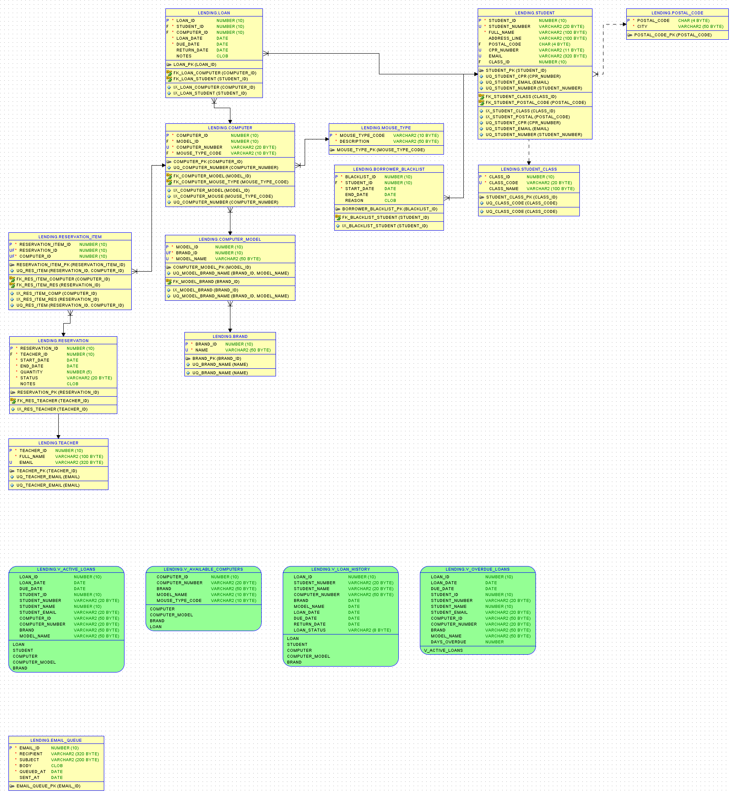

Lending Database System (Oracle)
Tech stack: Oracle SQL, SQL Developer, PL/SQL Triggers, Views, Data Modeler

This project models a lending workflow for computers and students using Oracle-first design conventions (VARCHAR2, NUMBER, DATE, CLOB). I built a normalized schema with lookup tables, core transaction tables, constraints, indexes, and triggers that enforce key rules such as blacklist checks and automatic due-date defaults. I also created operational views (V_ACTIVE_LOANS, V_OVERDUE_LOANS, V_AVAILABLE_COMPUTERS, V_LOAN_HISTORY) to simplify common reporting and dashboard-style queries. To extend the workflow, I implemented an email queue simulation that inserts reminders for overdue loans, and documented full environment setup plus ERD reverse-engineering from the live schema.